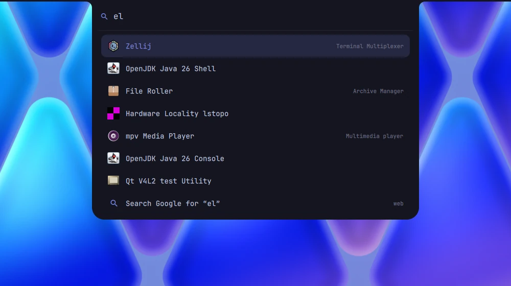

A tiling desktop that sets itself up.
vendiOS is Arch Linux with its own window manager, bar and installer. Windows arrange themselves, everything works on the first boot, and you never have to open a config file unless you want to.

Made for it, not bolted on.
The window manager, the bar, the launcher and the lock screen are all written for vendiOS, so they behave like parts of one thing instead of five projects taped together.
Windows you’re not using wait on a shelf.
Send a window to the scratchpad and it flies into a live card at the side of the screen. It keeps running in there: the music visualizer keeps dancing, the build keeps compiling.
Click a card to swap it back in, or shift-click to put it next to what you’re doing.
super shift − sendsuper − show or hide

The bar opens into a dashboard.
super D brings down a calendar, the weather, what’s playing, and switches for Wi‑Fi, Bluetooth, do not disturb and screen recording.
Its other tabs cover system stats, wallpapers, monitors and the screensaver, so the everyday settings are one key away rather than in a settings app.

Type a few letters, press enter.
super space finds apps as you type. If nothing matches, the last line searches the web for you instead.
Every shortcut is one key away too: super K shows them all on screen, so there’s nothing to memorise before you start.

And the parts you’d otherwise set up yourself.
A snapshot before every update
The disk is btrfs. If an update breaks something, vendi rollback and a reboot put you back.
Installs without internet
The 1.9 GB image carries every package, AMD, Intel and NVIDIA drivers included.
Encrypted by default
LUKS2 with argon2id. One passphrase at boot and that’s it.
One command for the system
vendi wifi, bt, audio, display, update and about twenty more.
Themes that change everything at once
Bar, terminal and apps recolour together, live. Or let dynamic take the colours from your wallpaper.
Screenshots, recording, text grabbing
Built in and on keys: capture an area, record the screen, or copy the text out of any part of it.
Mouse and touch still work
Hold super and drag windows around. On a touchscreen, tap to click and long-press for the right button.
Gaming in one command
vendi game sets up Steam, Lutris, gamemode, gamescope and MangoHud.
Websites as apps
vendi webapp add whatsapp gives a site its own window and launcher icon.
Your phone on your desktop
Mirror an iPhone over AirPlay or an Android phone over USB with vendi phone.
A tour that makes you do it
On first login a short walkthrough waits for you to actually open a window, switch workspace and find the overview.
Still Arch underneath
pacman, the AUR and Arch’s own repositories, exactly as you’d expect.
Try the first public beta.
I use vendiOS every day on the laptop I build it on. This is the first version for everyone else, so expect a few rough edges, and tell me when you find one.
- Write it to a USB stick with
dd, Fedora Media Writer or balenaEtcher. - Turn off Secure Boot, it isn’t supported yet, and boot from the stick.
- Answer a few screens. Nothing touches your disk until you confirm on the last one.
v0.1.0-beta · sha256 48a6fd8ad4e7cee783f4552d64ad32d4f9a5d5297eece4a4a5db03310b26a985
Like the wallpaper? It’s made for vendiOS. Download it in 4K.
{kind=link}